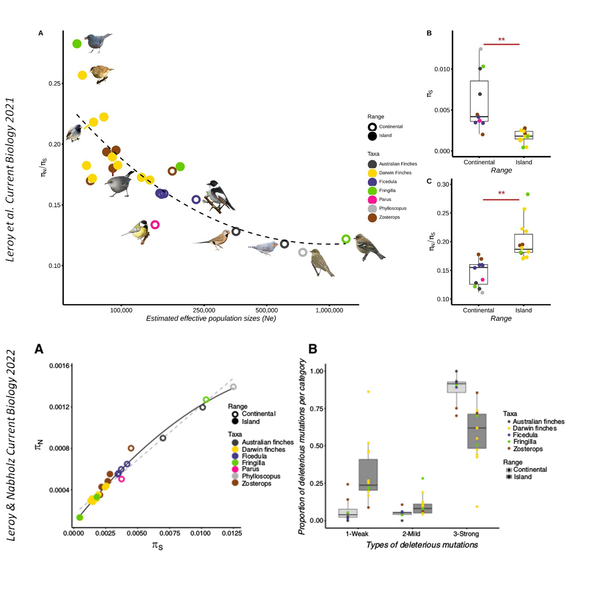

Thibault Leroy
Evolutionary biologist

A year ago, we published a study showing a reduced nucleotide diversity and efficacy of natural selection against slightly deleterious mutations in insular species using a large set of whole-genome sequences, as expected under the nearly neutral theory. Lukáš Kratochvíl & Michail Rovatsos recently question the use of ratios in biology, and specifically here the use of ratios of diversity at the non-synonymous and synonymous sites (πN/πS).
With Benoit Nabholz, we took the opportunity of the response to go deeper in the analysis. πN and πS are highly correlated under both a nearly and a strictly neutral model because πS = 2cNeμ and πN = 2cNeμf, where c is the ploidy level and f depnds on the theory considered. Under a strict neutral model f is a constant, while under a nearly neutral model, the value changes depending on Ne. When πN is plotted against πS, we observed a better fit for a non-linear model than a linear model, as expected assuming the nearly neutral theory. We also observed that the distributions of fitness effects of mutation are different between mainland and island species, with higher proportion of weakly and mildly deleterious mutations in island species, which is congruent with a reduction of the efficacy of selection in island species.
More details: Leroy et al. Island songbirds as windows into evolution in small populations Current Biology 2021
Leroy & Nabholz Response to Kratochvíl and Rovatsos (The pros, cons and alternatives to the use of πN/πS ratio in pop genomics) Current Biology 2022.
I am a population geneticist, currently employed as a full-time postdoc at the Institute of Research of Horticulture and Seeds (IRHS) University of Angers / INRAE with an (additional remote) teaching load at the department of Botany & Biodiversity research, University of Vienna, Austria. My research is focused on the evolution of genetic diversity and its determinants. I also study the relative importance of I the study of gene flow, drift, mutation and selection in divergence and speciation. I have particularly studied domesticated and non-domesticated plant, but also fungal some fungal and animal species for that purpose. My interests also include genomics - in its broader sense - and statistical methods for population genetics.
Contact:
Thibault (Tibo) Leroy -
Email
Institute of Research of Horticulture and Seeds (IRHS)
University of Angers, INRAE
GDO team, 42 Rue Georges Morel, 49070 Beaucouzé, France
Department of Botany and Biodiversity Research
University of Vienna, Faculty of Life Sciences
Rennweg 14, A-1030 Vienna, Austria
Webpage Univ. Vienna